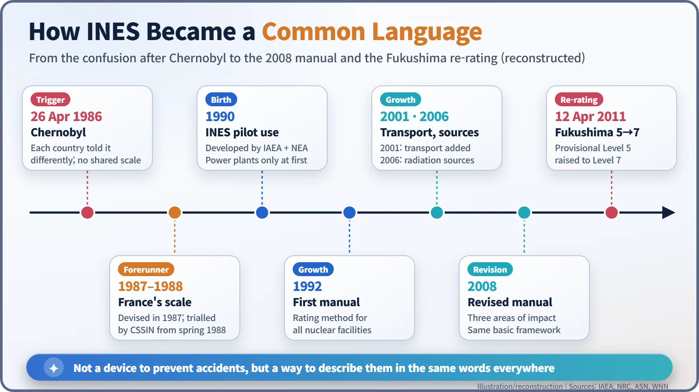
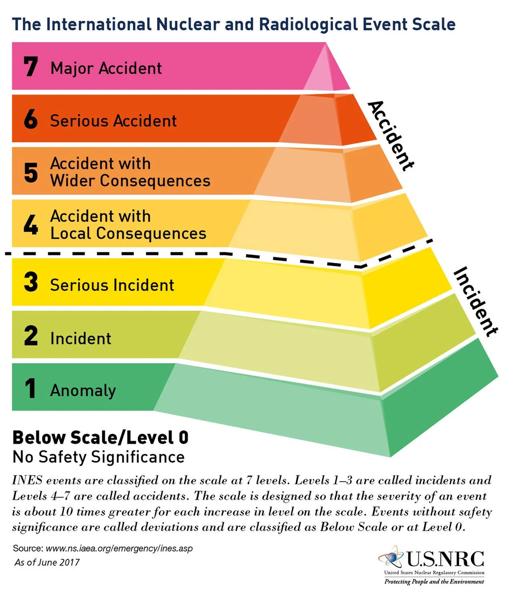
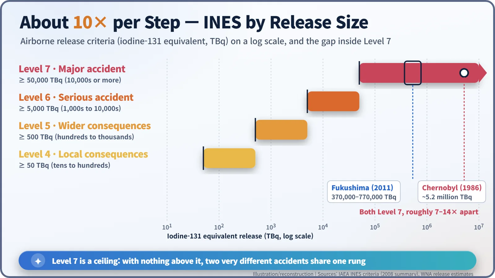

Nuclear History · 259
A Richter Scale for Nuclear Events? — The International Nuclear and Radiological Event Scale, INES (1990)
After Chernobyl the same event sounded different in every country, so the IAEA and the NEA built a 0-to-7 scale meant to work like an earthquake magnitude for communication.
After Chernobyl in 1986, countries described the same nuclear events in very different terms. Building on a French scale from 1987, the IAEA and the OECD Nuclear Energy Agency launched the International Nuclear and Radiological Event Scale (INES) in 1990: eight levels from 0 to 7, each step meant to be about ten times more severe than the last. It is a tool for communication, not a scientific measuring instrument, and its capped top level puts very different accidents on the same rung.
Two headlines
Imagine two news tickers scrolling past one after the other. One says "Magnitude 2.2 earthquake recorded." The other says "Fire at nuclear power plant!" Which one makes your stomach drop? Almost certainly the second. Yet the first line, with its single number, tells you at once that nothing much happened, while the second tells you nothing at all.
That contrast comes from the International Atomic Energy Agency's own training material on INES. In the IAEA's example, the "nuclear plant fire" turns out to be a transformer fire that was quickly put out; the plant reduced power, and no safety systems were affected. Until people hear those details, though, their first question is "Are my family and I safe?" Nuclear events needed something like an earthquake magnitude: a one-line number. This is the story of how they got one. [1]
One accident, many stories
The trigger was the Chernobyl accident of 26 April 1986. As radioactive material crossed borders, public interest in nuclear events exploded across Europe, but the explanations varied wildly. Looking back, the IAEA's INES coordinator summed up the problem: "Same information was not the same from one country to another." [1]
France moved first. In 1987 it set up a severity scale for nuclear events, and from spring 1988 the French High Council for Nuclear Safety and Information (CSSIN) applied it on a trial basis. According to France's nuclear safety authority, ASN, the scale was strongly promoted by the council's vice-chairman, the broadcaster Pierre Desgraupes. Japan developed a scale of its own at around the same time. [3] [4]
1990: a common language from Vienna and Paris
The IAEA (based in Vienna) and the OECD Nuclear Energy Agency (NEA, then based in Paris) turned these national efforts into an international standard. In 1990 they jointly developed INES and launched it for pilot use, at first only for events at nuclear power plants; the French scale was a major basis. In 1992 the first INES manual set out how to rate events at nuclear facilities in general. That is why sources give slightly different start dates: 1990 (pilot use), 1991 (ASN's wording for international implementation) or 1992 (first manual). [2] [3]

The scale kept growing. The 2001 edition added the transport of radioactive material; guidance endorsed in 2006 covered events involving radiation sources in hospitals and industry; and a revised manual in 2008 brought everything together while leaving the basic framework "essentially as before". The US Nuclear Regulatory Commission began limited participation in 1993 and, from 2001, reported all events at Level 2 and above. By 2011, 70 member states used the scale, each with a national INES officer liaising with the IAEA. [1] [2] [5]
Zero to seven, ten times per step
The structure is simple. Level 0 is a "deviation" with no safety significance. Levels 1 (anomaly), 2 (incident) and 3 (serious incident) are incidents. Levels 4 (accident with local consequences), 5 (accident with wider consequences), 6 (serious accident) and 7 (major accident) are accidents. In the words of an NRC infographic based on IAEA material, "the scale is designed so that the severity of an event is about 10 times greater for each increase in level on the scale."

Events are judged against three areas: the impact on people and the environment (how much was released, what doses people received); the impact on radiological barriers and controls inside a facility; and the degradation of defence in depth, the layered safety provisions meant to stop a problem before it causes harm. The third area is the interesting one. It lets an event be rated up to Level 3 because of how close it came, even if nobody was harmed. That is why Davis-Besse in the United States, where a reactor vessel head was found badly corroded by boric acid in 2002, is a Level 3 event. [1] [6]
Ratings for events before 1990 were assigned retrospectively. The 1957 waste-tank explosion at Kyshtym in the Soviet Union is Level 6; the Windscale fire in Britain the same year, Three Mile Island in 1979 and the 1987 caesium-137 accident in Goiânia, Brazil, are Level 5; and the 1999 criticality accident at the JCO plant in Tokaimura, Japan, is Level 4. [2] [6]
| Level | Name | Examples (most rated retrospectively) |
|---|---|---|
| 7 | Major accident | Chernobyl (1986), Fukushima Daiichi (2011) |
| 6 | Serious accident | Kyshtym, Mayak (1957) |
| 5 | Accident with wider consequences | Windscale (1957), Three Mile Island (1979), Goiânia (1987) |
| 4 | Accident with local consequences | JCO, Tokaimura (1999) |
| 3 | Serious incident | Vandellòs I (1989), Davis-Besse (2002), Paks (2003) |
Same "7", very different accidents
The release criteria make the ten-fold steps visible. Measured as an iodine-131 equivalent, a release of tens to hundreds of terabecquerels (TBq) points to Level 4, hundreds to thousands to Level 5, thousands to tens of thousands to Level 6, and more than several tens of thousands of TBq to Level 7. [1]

The catch is that there is no rung above 7. The 2011 accident at Fukushima Daiichi was first given a provisional Level 5 in mid-March. On 12 April 2011, Japan's Nuclear and Industrial Safety Agency (NISA) treated Units 1–3 as a single event and raised the rating to Level 7. The release estimate behind that decision was about 370,000 TBq iodine-131 equivalent; later estimates went up to 770,000 TBq. The World Nuclear Association puts Chernobyl's release at about 5,200,000 TBq. Both are Level 7, yet they differ by a factor of roughly 7 to 14. [7]
Hence the criticism. Critics say INES is a discrete ranking with a capped top, that it was designed as a public-relations tool rather than an objective scientific scale, and that it mixes up an accident's magnitude with its intensity. In 2011 the geologist David Smythe proposed a continuous alternative, the Nuclear Accident Magnitude Scale (NAMS).
An interpreter, not a measuring instrument
The IAEA itself draws clear lines. INES does not replace national criteria for reporting events, and it cannot be used to compare safety or regulatory programmes between countries. In ASN's words, it "is not an assessment tool": it exists to help the public grasp the size of an event. [1] [3]
So INES is less like a seismograph and more like an interpreter. It turns a dense technical report into a single sentence: "Level 1, nothing to worry about." But first translations can change, as Fukushima showed, and the same word can carry very different stories, as Chernobyl and Fukushima show together. Perhaps the real lesson of INES is a habit: when you hear the number, read the explanation behind it too.